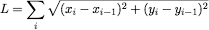
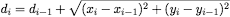
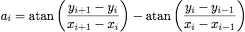
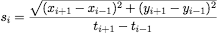

To show or hide the Geometry Info window, click on the corresponding icon in the window toolbar, or select (⌥⌘I).
The list in the geometry info window shows the data points of the selected data set, together with the following geometry information:
Measures the total length of the segmented curve defined by the data points.

Measures the cummulated distance from the first point along the segmented curve.

Measures the turning angle of the curve at each point. Angles are given in degrees, measured counter clockwise (zero meaning a local straight line).

Computes the instantaneous speed of the trajectory at each point. The speeds are given in units per seconds and are only given when digitizing a movie.

Click on the button Copy to copy the selected rows or columns (or all values if nothing is selected) into the clipboard.
You may also select (⌘E) or (⌥⇧⌘C) and check the item Include Geometry Info.
The errors are computed for each values, based on the minimal precision entered in the Geometry Info window or on the individual error bars of each point.